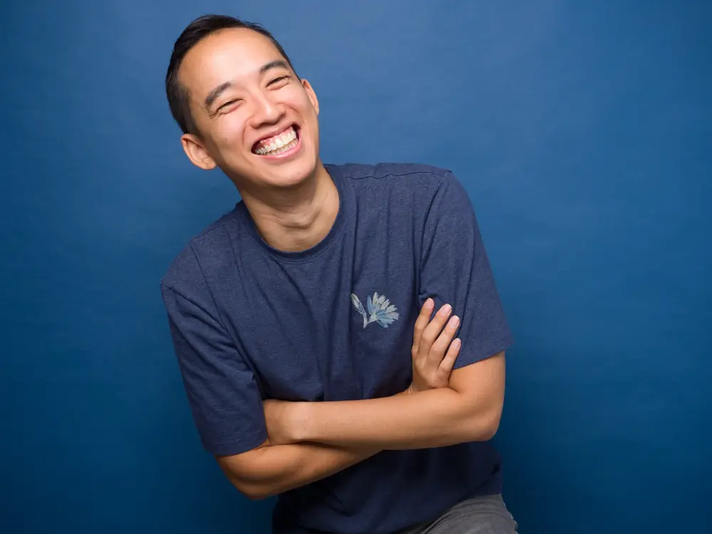
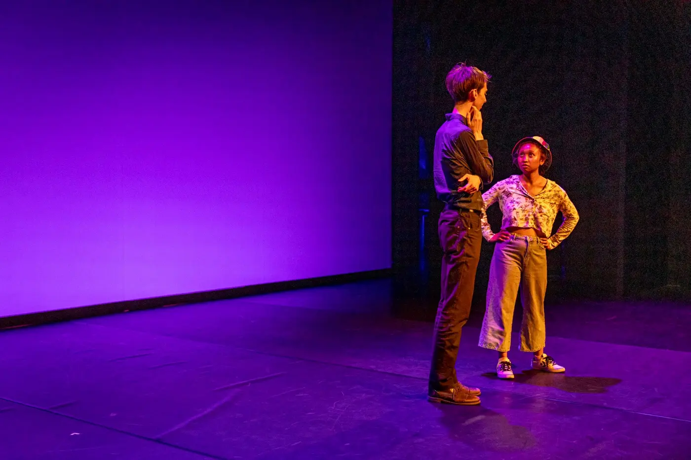
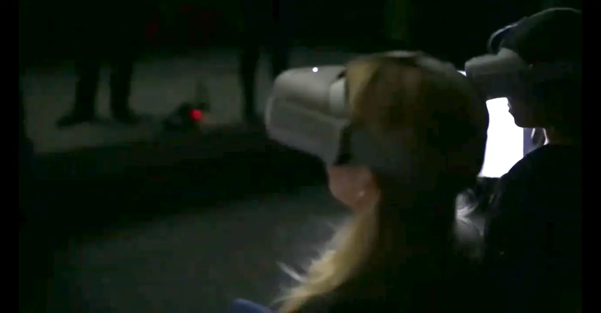

Arthur Nguyễn
Un neuroscientifique qui observe une salle aussi finement qu’un jeu de données, conçoit pour les personnes qui s’y trouvent, et mène les choses à bien.
J’ai passé huit ans au Brain & Learning Lab (Université de Genève, Campus Biotech), à étudier le flow dans les jeux vidéo. En dehors du labo, j’ai mis en scène du théâtre-forum, conçu des spectacles immersifs dans des musées, et joué et enseigné l’improvisation, parfois depuis un piano. Les deux ont plus en commun qu’on ne le croit : comprendre finement les gens, concevoir quelque chose sur mesure, puis le mener à bien.
Depuis novembre 2026 : Qualité de vie au travail, Hôpitaux Universitaires de Genève (HUG).

Salle 1
Ma façon de travailler
Trois fils, tissés ensemble
La plupart des projets commencent par le premier, demandent le deuxième et se concluent par le troisième. En pratique, ils se chevauchent sans cesse.
01Comprendre
Recherche · données · analyse
Observer d’abord. Puis poser des questions précises, recueillir des données fiables, et en tirer des conclusions honnêtes.
- J’ai remarqué, à plusieurs reprises, que les spectateurs ne voyaient pas une marque qui aurait dû faire échouer mon tour de cartes. J’en ai fait une expérience, aujourd’hui publiée dans Scientific Reports.
- J’ai construit des pipelines d’analyse et des rapports statistiques qui se relancent en toute sécurité et se lisent clairement, par moi comme par d’autres.
- J’ai mené une équipe jusqu’à une mention honorable au Lemanic Life Sciences Hackathon 2025 de l’EPFL : la seule équipe à aborder l’éthique, comme le demandait la consigne.
02Concevoir pour les gens
Facilitation · narration · design d’expérience
Écouter et recueillir des histoires, repérer les forces de chacun, puis placer les gens là où ils trouvent leur place et où on a besoin d’eux : un ensemble varié, pas un moule. Concevoir des expériences dans lesquelles on a envie d’entrer. Parfois, simplement mettre les gens en lien.
- J’ai écrit et mis en scène des spectacles où le public participe : du théâtre-forum pour l’Université de Lausanne, une enquête immersive au Musée d’Art et d’Histoire.
- J’ai accompagné 9 jeunes chercheurs et coaché de nombreuses personnes en prise de parole, dont une courte séance avant le pitch réussi d’une collègue pour une bourse Ambizione de 830 000 CHF.
- J’ai co-présidé la Social Campus Biotech Association, pour créer une communauté vivante sur un campus de plusieurs bâtiments, avec un événement mensuel pour plus de 150 personnes.
03Mener à bien
Planification · résolution de problèmes · réalisation
Anticiper, voir venir les problèmes, alléger la charge. Être fiable, et garder la joie.
- J’ai automatisé l’accueil des participants en amont, pour que l’équipe consacre son temps à bien les recevoir plutôt qu’à les planifier.
- Chez Google, j’ai écrit des outils en shell et Excel qui ont épargné du travail manuel à mon équipe. Personne ne savait que c’était possible avant que je m’y mette ; toute l’équipe s’en est servie.
- J’ai conçu des jeux d’équipe pour des retraites de labo, dont un jeu sur mesure où les collègues devaient se deviner et se classer à partir de leurs propres réponses. Rapide à construire, et sans risque pour personne, parce que j’avais déjà une bonne lecture du groupe.
Salle 2
Projets choisis
Des projets que j’ai menés
Chacun a son récit détaillé : la demande, ce que j’ai fait, et ce que je ferais autrement. Je les ai menés, entouré de mentors et de regards extérieurs de confiance.

A MAH-tter of Life and Death
Une enquête immersive dans l’aile égyptienne, pour 50 personnes du grand public.
Read the story →
Flow, distraction et beaucoup d’EEG
En état de flow, le cerveau semble toujours remarquer, sans pour autant réagir. Et : des données propres issues de plus de 170 personnes en train de jouer.
Read the story →
La marque que personne n’a vue
Une carte qui aurait dû trahir le tour, une histoire, et une arnaque de rue transformée en expérience.
Read the story →
Des vies déviées
Les biais implicites dans le monde académique, joués par des chercheurs, avec un public qui monte sur scène pour changer la fin.
Read the story →
Un ARG d’Halloween
Créé en trois semaines avec des collègues de tout le campus, pour plus de 40 joueurs.
Read the story →Salle 3
Aussi
Des rôles plus discrets, les mêmes fils
- 2026Liotard Awakens, Musée d’Art et d’Histoire. Des portraits qui parlent : des comédiens encadrés comme les tableaux de Liotard, discutant avec les visiteurs lors d’un afterwork, mis en scène par Yohann Thenaisie. L’idée est née de nos brainstormings, et c’est moi qui suis tombé dessus. J’ai ensuite soutenu le metteur en scène comme concepteur et regard extérieur, et fait avancer les choses en coulisses.
- 2018–2023Social Campus Biotech Association. Co-président. Communauté, bien-être et sens, sur un campus où les gens se parlaient peu. Ce que l’on voyait, c’était un événement mensuel pour plus de 150 personnes. Derrière, une enquête auprès des membres et un focus group ont fixé le cap.
- 2022Science Me!, Genève. Maître de cérémonie bilingue pendant deux jours d’un concours international de médiation scientifique : 16 équipes, plus de 2 300 spectateurs.
- Depuis 2014Conseil en projets immersifs. Regard extérieur pour celles et ceux qui créent des jeux et des spectacles immersifs : transformer une idée en quelque chose de faisable dans des contraintes réelles. La sécurité d’abord : depuis 2022, je mets en place des protocoles pour les cas limites entre jeu d’acteur et maîtrise de jeu, pour chaque spectacle auquel je participe.
- 2019Formation Innosuisse Business Concept. Direction d’une équipe de quatre sur l’usage de l’IoT et de l’analyse de données pour personnaliser des expériences immersives à grande échelle.
- 2017Google, Zürich. Analyste politique Shopping : classification et qualité des données des offres Google Shopping, plus de l’automatisation qui ne figurait pas dans mon cahier des charges.
- 2015Goshaba, Paris. Analyse de données (Python, SQL) et revues de littérature pour de nouveaux tests comportementaux, dans une start-up qui évaluait la cognition par le jeu.
- 2012–2015Disneyland Paris. Mon premier emploi, sur quatre étés : trois comme hôte d’attraction à Phantom Manor et à la Tour de la Terreur, un à la billetterie. Garder l’œil partout pour créer de la magie pour les visiteurs, avec la sécurité d’abord, puis la courtoisie, l’inclusion, le spectacle et l’efficacité. Les deux m’ont appris à encaisser et la diplomatie ; les annonces d’attraction m’ont appris à animer et à interagir en direct. Et explorer les autres attractions et lands m’a appris à réseauter.
- 2013–2015Ascoergo, Bordeaux. Vice-président de l’association des étudiants en sciences cognitives : une équipe de 11, des conférences scientifiques informelles dans des bars, une table ronde d’anciens. Là où ma vie associative a commencé.
Salle 4
Conférences & publications
Articles, interventions, film
- 2026Nguyen, A.*, Alexander, R. G.*, Venkatakrishnan, A., Macknik, S. L., & Martinez-Conde, S. Assessing the role of magician patter on deception in the Three-Card Monte. Scientific Reports, 16, 14770. *co-premiers auteurs
- 2026Flow et distraction dans le jeu vidéo. Poster, FENS Forum 2026. Poster (PDF)
- 2023Nguyen, A., & Bavelier, D. Play in video games. Neuroscience & Biobehavioral Reviews. Article
- Depuis 2022La sécurité dans la performance immersive. Protocoles et méthodes pour les cas limites entre jeu d’acteur et maîtrise de jeu, présentés à l’équipe de chaque spectacle auquel je participe.
- 2022Qu’est-ce qui fait fonctionner une expérience immersive ? Nomenclature, état de l’art et exemples, pour une communauté de GNistes.
- 2021Expériences immersives et changement social. Intervention invitée, master en innovation et durabilité.
- 2021Un court métrage, réalisé en un week-end. Hackathon SciFilmIt : des équipes de scientifiques, de cinéastes et une « boîte noire ». J’étais la boîte noire, le liant entre les deux. Voir
- VidéoDes vies déviées, première partie · Bande-annonce de l’ARG d’Halloween · Soutenance de thèse
Arrière-salle
À côté
Le reste de la palette
L’improvisation s’est construite sur ce qui était déjà là : l’écoute, venue de la musique, l’animation, venue de Disney, et une aisance à ne pas savoir ce qui vient ensuite. Je joue sérieusement depuis 2022, en anglais et en français : avec The Murderet, une troupe d’improvisation qui m’a aussi permis d’approfondir mon travail immersif, et avec The Living Room, mon propre projet. J’ai aussi mis en scène des spectacles, tenu le piano comme directeur musical, géré la régie, animé des jams, donné des ateliers, et fait venir des formateurs à Genève pour enrichir la scène locale. Elle nourrit ce qui compte le plus pour moi : le jeu, la curiosité, la découverte, la narration, l’esprit d’équipe et la confiance dans le processus.
Piano : classique, puis jazz, puis production musicale. Ma spécialité : le déchiffrage, et improviser une chanson ou une musique en direct sous une scène.
Escape games : plus de 120, dont certains des meilleurs au monde, et je voyage pour eux, comme pour le théâtre immersif. Tant qu’on n’en a pas vécu un excellent, difficile d’imaginer à quel point l’expérience peut être haut de gamme. Moitié loisir, moitié recherche en design.
Et aussi : magie de proximité (une fois pour la science), danse du lion, origami et un peu de plongée.
Bonneteau
Un petit clin d’œil à ma recherche. Suivez la carte rouge.
Contact